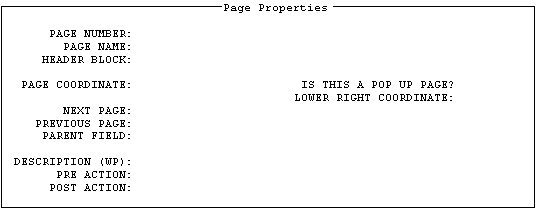
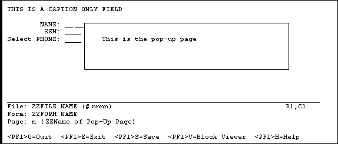

| Contents: | Main | Chapter | See Also: | Getting Started Manual | Advanced User Manual | |||
REF: For information on how to move from page to page when editing a form, see the "Going to Another Page" section.
To edit the properties of the current page, press <PF4>P from the Form Editor's Main Screen. The form for editing page properties looks like this:

If you want the page to be a "popup" page (window):
NOTE: VA FileMan 22.2 supports screens longer than 24 lines.
As described in the "Editing Page Properties" section above, you can press <PF4>P to invoke a ScreenMan form to edit the properties of the current page. You can also change the coordinate of a "popup" page directly from the Form Editor's Main Screen, by selecting and dragging the border of the "popup" page.
The following is an example of the Main Screen of the Form Editor where the current page is a "popup" page.

To move the entire "popup" page around on the Main Screen, do the following:
To resize the "popup" page (i.e., to change the lower right coordinate of the page), do the following:
Reviewed/Updated: May 2026